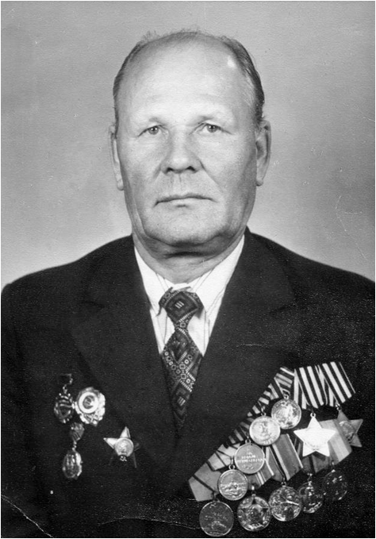

Карачев Николай Иванович
(14.12.1922 -15.01.2016)
Кавалер ордена Славы 3 - х степеней.
Родился 14 декабря 1922 года в д. Фоминский починок Шонгско - Николаевской волости, впоследствии Куриловского сельсовета Кичменгско - Городецкого района. Окончил начальную школу, работал в колхозе, потом в леспромхозе.
В августе 1941 года был призван на военную службу и ушёл на фронт. Начал воевать минометчиком на Калининском фронте. В 1942 году воевал под Сталинградом наводчиком 82- мм минометов, где был тяжело ранен. Отражали атаки противника, который двигался в направлении тракторного завода. После госпиталя перешел в разведку.
В начале 1943 года направили в Ленинград. В феврале 1944 года за захват трех «языков» был представлен к ордену Славы 3- й степени.
В марте 1944 года разведчики Николая Ивановича Карачева захватили в плен целый батальон немцев и привели в штаб. А выполняя в очередной раз задание, спасая раненого товарища, несли его к своим 18 км. Карачев Николай Иванович был награжден вторым Орденом Славы 2- й степени. До того, как Н. И. Карачев был представлен к награждению орденом Славы 2 степени, был ранен и попал в госпиталь. По ошибке, его посчитали погибшим, и домой отправили «похоронку», а наградные документы в архив. Дома его уже не ждали живым, пока не получили письмо.
Третьим орденом Славы 1- й степени он был награжден за бои в Восточной Пруссии, когда разведчики разгромили зенитную батарею немцев и захватили много пленных. Но орден получить не смог из - за ранения. За участие в штурме Кенигсберга он получил орден Красной Звезды. Только 5 апреля 1985 года Н. И. Карачев получил третий Орден Славы 1 степени и стал полным кавалером ордена солдатской славы.
После войны Николай Иванович Карачев работал в управлении механизации г. Таллинна в Эстонии. Участник нескольких Парадов 9 мая в г. Москва. Многократно бывал на своей малой родине, встречался с родственниками, боевыми ветеранами. Умер Николай Иванович 15 января 2016 года в Таллине. В Сквере Воинской Славы в с. Кичменгский Городок в 2008 году был установлен бюст в честь кавалера ордена Славы 3- х степеней, одна из улиц с. Кичменгского Городка носит имя Николая Ивановича Карачева.
Родился 14 декабря 1922 года в д. Фоминский починок Шонгско - Николаевской волости, впоследствии Куриловского сельсовета Кичменгско - Городецкого района. Окончил начальную школу, работал в колхозе, потом в леспромхозе.
В августе 1941 года был призван на военную службу и ушёл на фронт. Начал воевать минометчиком на Калининском фронте. В 1942 году воевал под Сталинградом наводчиком 82- мм минометов, где был тяжело ранен. Отражали атаки противника, который двигался в направлении тракторного завода. После госпиталя перешел в разведку.
В начале 1943 года направили в Ленинград. В феврале 1944 года за захват трех «языков» был представлен к ордену Славы 3- й степени.
В марте 1944 года разведчики Николая Ивановича Карачева захватили в плен целый батальон немцев и привели в штаб. А выполняя в очередной раз задание, спасая раненого товарища, несли его к своим 18 км. Карачев Николай Иванович был награжден вторым Орденом Славы 2- й степени. До того, как Н. И. Карачев был представлен к награждению орденом Славы 2 степени, был ранен и попал в госпиталь. По ошибке, его посчитали погибшим, и домой отправили «похоронку», а наградные документы в архив. Дома его уже не ждали живым, пока не получили письмо.
Третьим орденом Славы 1- й степени он был награжден за бои в Восточной Пруссии, когда разведчики разгромили зенитную батарею немцев и захватили много пленных. Но орден получить не смог из - за ранения. За участие в штурме Кенигсберга он получил орден Красной Звезды. Только 5 апреля 1985 года Н. И. Карачев получил третий Орден Славы 1 степени и стал полным кавалером ордена солдатской славы.
После войны Николай Иванович Карачев работал в управлении механизации г. Таллинна в Эстонии. Участник нескольких Парадов 9 мая в г. Москва. Многократно бывал на своей малой родине, встречался с родственниками, боевыми ветеранами. Умер Николай Иванович 15 января 2016 года в Таллине. В Сквере Воинской Славы в с. Кичменгский Городок в 2008 году был установлен бюст в честь кавалера ордена Славы 3- х степеней, одна из улиц с. Кичменгского Городка носит имя Николая Ивановича Карачева.